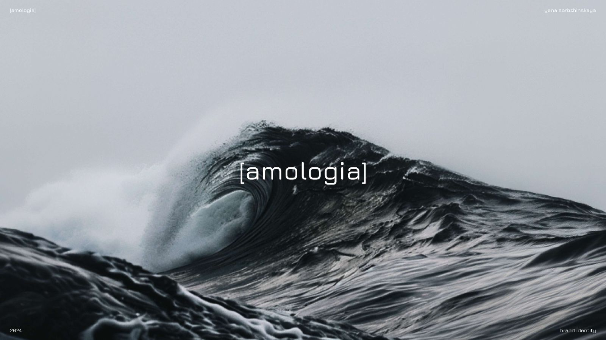
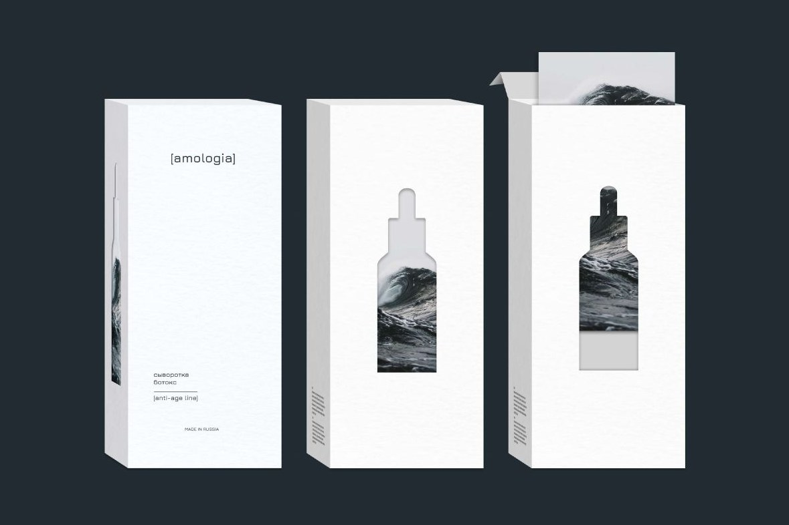
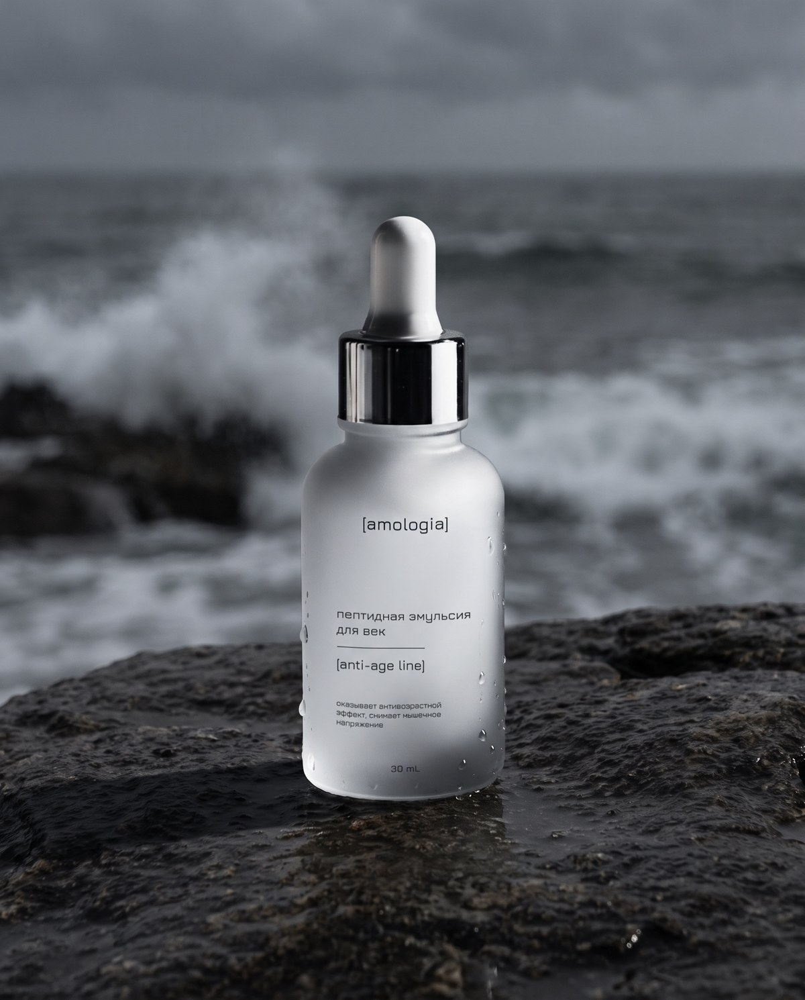
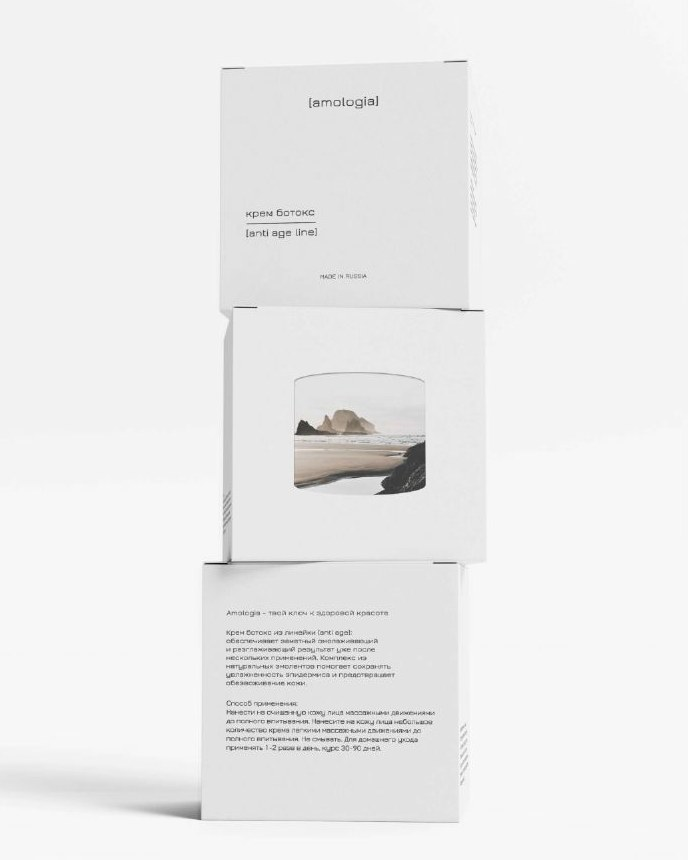
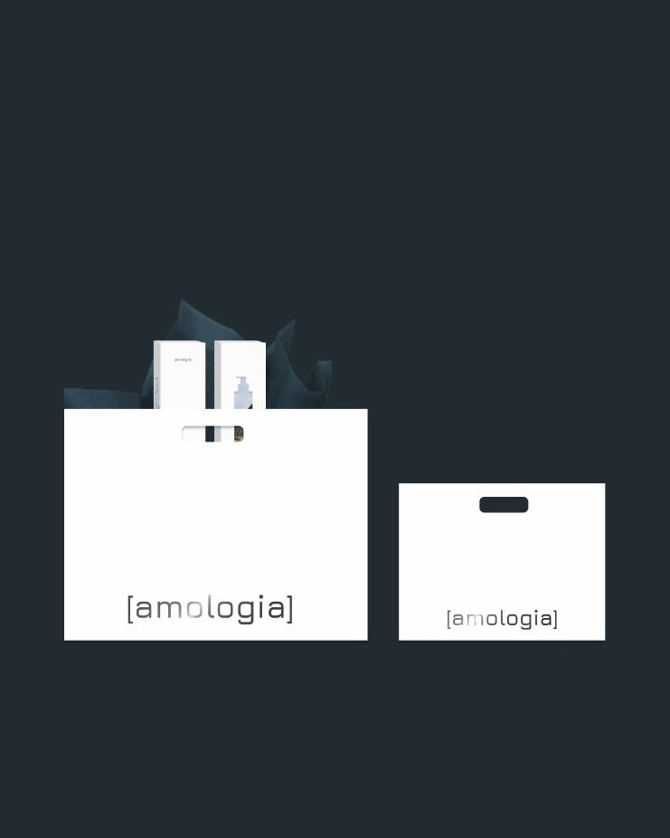
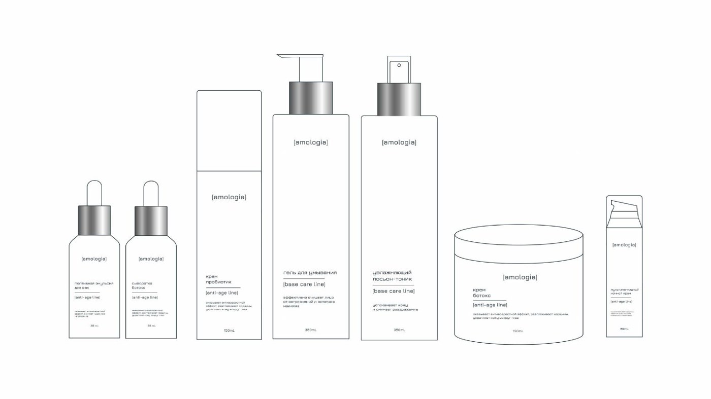
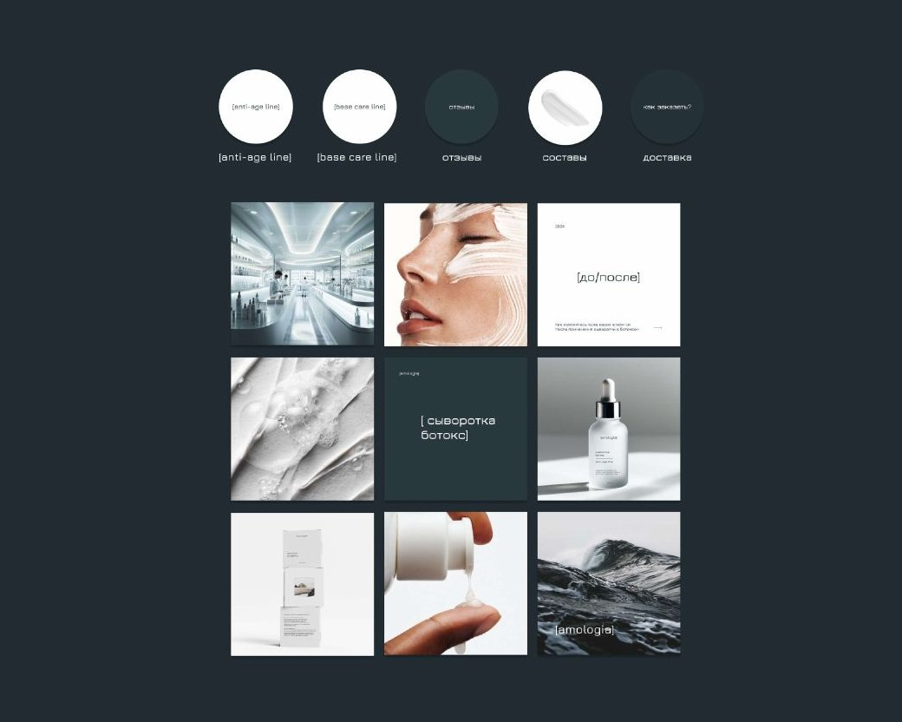

[amologia]
«Я люблю тебя, наука»
Так переводится название. Задача - соединить строгую медицину и живую природу: типографика сдержанная, почти лабораторная, а на коробке через вырубку видна волна или камни у моря.
морскойбелыйкамень
- Логотип в скобках, как формула
- Две линии: anti-age и базовый уход
- Коробки, развёртка, пакеты, флаконы





